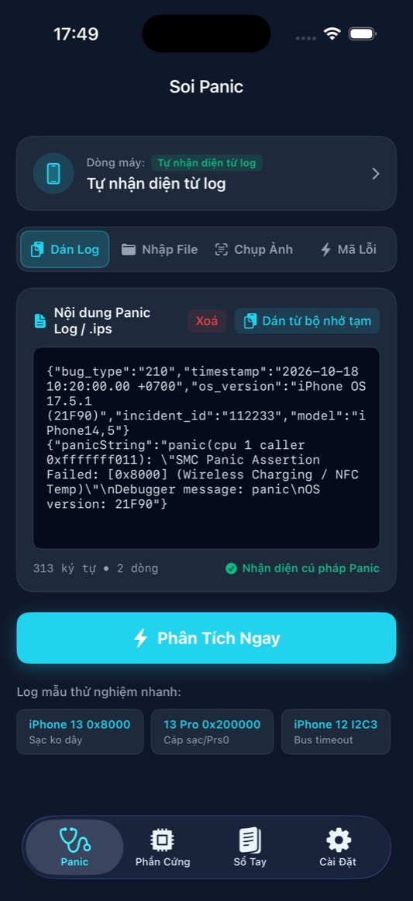
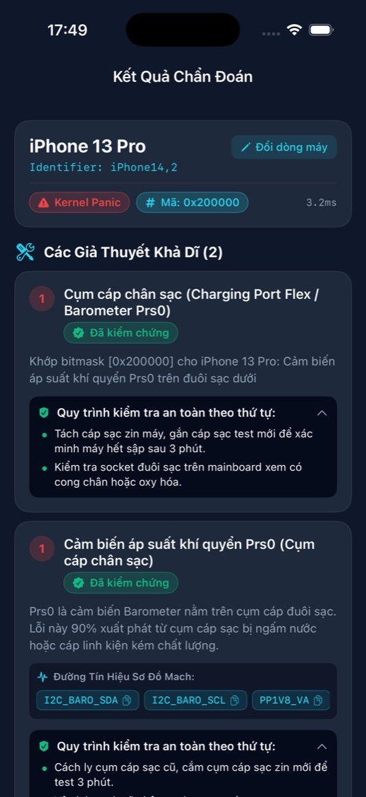
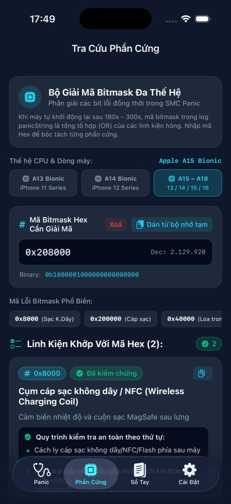
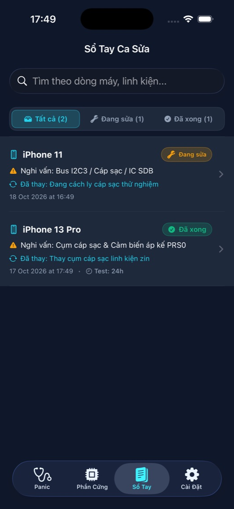

Dán log panic-full, xem linh kiện nào cần kiểm tra trước.
SoiPanic đọc nhật ký sập nguồn của iPhone, chỉ ra dòng gây lỗi, khoanh vùng cáp hoặc IC nghi vấn và gợi ý thứ tự kiểm tra, từ tháo cáp tới đo trở kháng, trước khi phải đụng vào main.
Tải trên App StoreCho iPhone 11 đến iPhone 16 Pro Max. Phân tích chạy ngay trên máy, không cần mạng.
Bản demo trên web chỉ nhận ra ba mẫu lỗi này. Ứng dụng có bộ luật cho từng dòng máy, chip A13 đến A18.
Trong ứng dụng

Soi log
Dán log, mở tệp .ips, chụp ảnh màn hình log hoặc gõ mã lỗi. Ứng dụng tự nhận dòng máy.

Kết quả
Các giả thuyết xếp theo khả năng, kèm đường tín hiệu trên sơ đồ và quy trình kiểm tra an toàn.

Phần cứng
Tách mã bitmask của SMC panic, ví dụ 0x208000, thành từng linh kiện theo thế hệ chip.

Sổ tay
Mỗi ca một trang: máy nào, nghi gì, đã thay gì, đang sửa hay đã xong.
Nên biết trước khi cài
Không cần mạng để phân tích
Bộ luật và dữ liệu linh kiện nằm sẵn trong máy. Soi log ngay tại bàn sửa, kể cả khi không có Wi‑Fi.
Thông tin của khách được ẩn
Serial, IMEI, UDID và ECID bị xóa khỏi log trước khi hiển thị hay lưu lại.
Giải thích bằng AI là tùy chọn
Chỉ chạy khi bạn bấm hỏi và đồng ý. Khi đó dòng máy, mã lỗi và tối đa 300 ký tự log đã ẩn thông tin được gửi đi. Tắt hẳn được trong Cài đặt.
Vẫn phải đo trước khi khò
SoiPanic khoanh vùng dựa trên log. Hãy xác nhận bằng đồng hồ đo và kính hiển vi trước khi tháo IC.
Dòng máy hỗ trợ
iPhone 11 đến iPhone 16 Pro Max, chip A13 Bionic đến A18 Pro.
Bốn ngôn ngữ
Tiếng Việt, English, 日本語 và 한국어. Tên tín hiệu và mã lỗi giữ nguyên như trên sơ đồ.
Lấy tệp panic-full trên máy khách
Mỗi lần iPhone tự khởi động lại vì lỗi phần cứng, iOS ghi lại một tệp panic-full. Đây là cách tìm nó.
- Mở Cài đặt, vào Quyền riêng tư & Bảo mật.
- Cuộn xuống cuối, chọn Phân tích & Cải tiến, rồi Dữ liệu phân tích.
- Gõ
panic-fullvào ô tìm kiếm. - Chọn tệp có giờ gần nhất với lần máy sập nguồn.
- Bấm Chia sẻ để gửi tệp qua AirDrop hoặc Zalo, hoặc sao chép toàn bộ nội dung.
- Mở tệp bằng SoiPanic, hoặc dán nội dung vào màn hình Soi log.